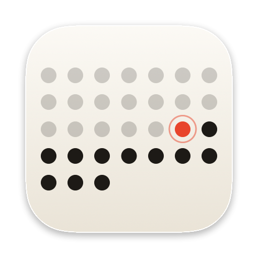
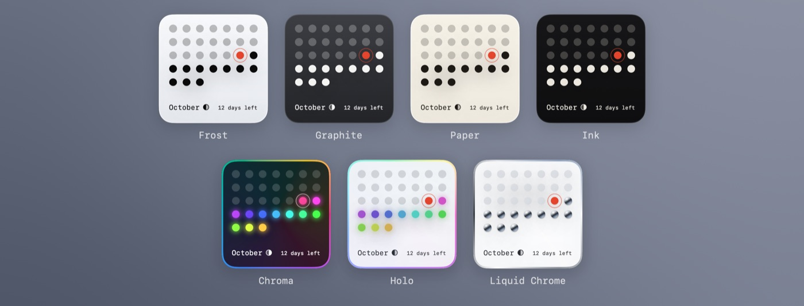

Your month and year in dots.

Questions, bug reports or feature ideas? Send an email and you'll usually get a reply within a few days.
valentin.isaac.holz@gmail.comPlease include your macOS version and, if something looks wrong, a screenshot.
Open Month Dots once after installing it. Then right-click an empty spot on your desktop, choose Edit Widgets…, search for Month Dots and drag the size you like onto the desktop or into Notification Center. Small and Medium show this month; Large shows the whole year.
Every dot is one day. Faded dots are days that have passed, solid dots are the days still ahead, and today is marked with a ring in your accent color. The count includes today, so on the last day of the month it says “1 day left”.
Right-click a placed widget and choose Edit “Month Dots”. There you can pick one of seven themes (Frost, Graphite, Paper, Ink, Chroma, Holo and Liquid Chrome), today's accent color, and the day your week starts on. Each widget keeps its own settings, so you can place several in different themes.
Align to weekdays lays the month out like a calendar, so each column is a weekday. Otherwise the dots simply run seven to a row from the 1st. Hollow weekends draws Saturdays and Sundays as rings so the weeks are easier to read.
Click the number at the bottom of the widget to switch between days left, percent of the month (or year) left, and the week and day of the year.
Today's moon phase. It's calculated on your Mac from the date, with no internet connection, and can be turned off in the widget's settings.
macOS refreshes it every hour and right at midnight, when the dots move on to the new day. Widgets can't animate, so today's ring stays still.
macOS can tone down desktop widgets while other windows are in front of them. You can change this in System Settings → Desktop & Dock → Widget style.
Remove any Month Dots widgets (right-click → Remove Widget), then drag Month Dots from your Applications folder to the Trash.
Last updated: October 20, 2026
Month Dots does not collect any data. The app and its widget run entirely on your Mac. They don't use analytics, tracking, advertising, accounts or network connections, and nothing you do in the app is sent to the developer or to third parties.
Month Dots doesn't access your calendar, contacts, location or other personal information. The dots and the moon phase are calculated from your Mac's date and time.
Your settings (such as the theme and which number the widget shows) are stored only on your Mac using the standard macOS preferences system, and are removed when you delete the app.
If you email support, your message and email address are used only to reply to you and are never shared.
Questions about this policy: valentin.isaac.holz@gmail.com